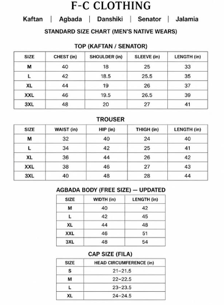
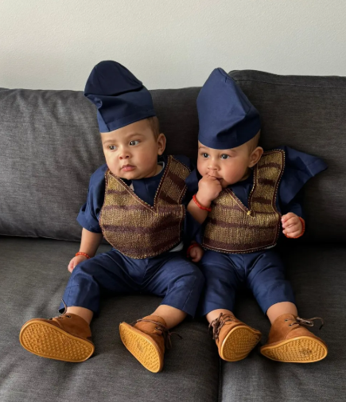

About Us
FRANCIS_FIED is a fashion brand built on creativity, quality, and excellence. For over 10 years, we have dedicated ourselves to designing and sewing premium outfits that combine style, comfort, and confidence. Our passion for fashion and attention to detail have helped us build a strong reputation with countless satisfied clients across Nigeria.
At FRANCIS_FIED, we believe fashion is more than clothing it is a statement of personality, class, and confidence. Every outfit we create is carefully crafted with 100% dedication, ensuring comfort, durability, and a perfect fit for our customers.
Over the years, we have successfully trained many apprentices who are now doing exceptionally well in their own fashion careers and brands. We are proud to contribute to the growth of the fashion industry by mentoring and empowering upcoming designers.
Our Philosophy
"We bring your thoughts into reality."
At FRANCIS_FIED, we believe that clothing is more than just fabric and thread; it is an extension of your personality. Every stitch we make is a deliberate step toward perfection, guided by the vision you carry in your mind.
The Art of Precision From the very first sketch on paper to the final fitting in the mirror, we handle your style with the precision it deserves. We don't just follow trends; we create timeless pieces that command respect in any room. Whether it is the sharp lines of a corporate suit or the cultural richness of a bespoke Kaftan, our goal is to ensure you feel as powerful as you look.
Crafted for the Modern Gentleman Our process is rooted in heritage but designed for the future. We source only the finest textiles to ensure that your garment doesn't just look premium it feels like a second skin.
"Fashion is what you buy, but Style is what you do with it. We provide the masterpiece; you provide the soul of the masterpiece."



